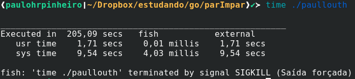
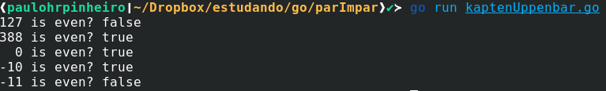

Como saber se um número é par de forma complicada
Uma coletânea sobre diversas formas de descobrir se um número é par ou não em Go

https://pt.wikipedia.org/wiki/Paridade
Um thread bem divertida no twitter
Em um thread, é apresentada uma situação absurda em que a função proposta para descobrir se um número é par era uma sequência de ifs para cada número retornando True ou False, e a autora, ironicamente pergunta se há um meio para fazer isso de maneira mais fácil:
https://twitter.com/ctrlshifti/status/1288745146759000064
Eu peguei a imagem e postei no Linkedin, perguntando "Como proceder se der de cara com isso em um PR? :)" e foi um baita clickbait. Dentro da minha bolha a galera reagiu com bom humor, mas fora teve respostas interessantes sobre como mentorizar ou orientar alguém que fizesse isso, e até mesmo rendendo uns comentários mais exaltados tipo "por que expor dessa forma alguém que está começando?":
https://www.linkedin.com/posts/paulohrpinheiro_como-proceder-se-der-de-cara-com-isso-em-activity-6694579298629685248-eXyQ
No twitter também rolou alguns casos de haters com a mulher que postou isso. Alguns a ironizando por ser mulher. Outros desesperados apontando a solução óbvia em tom de lacração.
É nítido, em tudo isso, a exasperação ou incapacidade de muitos, para entender um texto. Reflexo desse triste momento em que o mundo vive de trevas econômicas, sociais, sanitárias e culturais.
O aprendizado
Mas a galera do bem sempre se sobressai. E as alternativas para esse trivial problema demonstram uma criatividade admirável. Eu escolhi algumas delas, pois a matemática como ciência já é um interesse especial para mim, e também tive a ideia de reescrever em Go os algoritmos, linguagem que estou aprendendo. Tem muito mais coisa lá, vale o passeio pela thread.
Também deixei no backlog outras sugestões para um próximo com ideias ainda mais surpreendentes.
Vamos neeessa!
Isso é pra quem tem referências :)
Mais uma piada antes de começar
O @paullouth sugeriu a seguinte solução:
package main
import "fmt"
func isOdd(n int) bool {
return !isEven(n)
}
func isEven(n int) bool {
return !isOdd(n)
}
func main() {
fmt.Println(isEven(10))
}
Que obviamente congelou minha modesta máquina por alguns minutos:

Não resisto, mais uma
O @panondo argumentou que performance é o que interessa:
func isEven(n int) bool {
return true
}
Verificar o último dígito (@ctrlshifti)
package main
import (
"strconv"
"github.com/paulohrpinheiro/mytest"
)
func isEven(n int) bool {
s := strconv.Itoa(n)
l := s[len(s)-1]
return l == '0' || l == '2' || l == '4' || l == '6' || l == '8'
}
func main() {
mytest.Run(1000, isEven)
}
Minha versão com expressão regular
Inspirado por essa versão, lembrei dessa grande bala de prata, geralmente usada pra fazer a coisa errada no lugar errado!
package main
import (
"regexp"
"strconv"
"github.com/paulohrpinheiro/mytest"
)
func isEven(n int) bool {
var r = regexp.MustCompile(`[02468]$`)
s := strconv.Itoa(n)
return r.MatchString(s)
}
func main() {
mytest.Run(1000, isEven)
}
Multiplicando por dez e dividindo por dois (@KaptenUppenbar)
Mais uma genial ideia, afinal, números pares nessa condição terão como último dígito o zero e números ímpares o cinco. Perceba-se que ele multiplicou por dez apenas adicionando um zero ao final do número.
A ideia original for apresentada em Python:
is_even = lambda x: str(int(int(str(x)+'0')/2)).endswith('0')
Em Go pode-se ter:
package main
import (
"fmt"
"strconv"
)
func isEven(n int) bool {
p := strconv.Itoa((n * 10) / 2)
return p[len(p)-1] == '0'
}
func main() {
fmt.Printf("127 is even? %v\n", isEven(127))
fmt.Printf("388 is even? %v\n", isEven(388))
fmt.Printf(" 0 is even? %v\n", isEven(0))
fmt.Printf("-10 is even? %v\n", isEven(-10))
fmt.Printf("-11 is even? %v\n", isEven(-11))
}
Não usei o pacote de teste, pois ao multiplicar por 10, estamos fora dos limites do tipo numérico.

Inspirado no anterior, criei esse
Aqui, usando a divisão inteira, se o número for par, ao dividi-lo por dois, e então multiplicá=lo por dois, deve-se ter o mesmo número:
package main
import (
"github.com/paulohrpinheiro/mytest"
)
func isEven(n int) bool {
return (n/2)*2 == n
}
func main() {
mytest.Run(1000, isEven)
}
Corre-se o risco de se o compilador otimizar a expressão, cairmos em uma tautologia.
Pegada funcional, com guardas e recursão (@arara_)
Esse aqui me deu uma vontade louca de voltar a estudar Haskell.
package main
import "fmt"
func isEven(n int8) bool {
if n == 1 {
return false
}
if n >= 2 {
return isEven(n - 2)
}
if n <= -1 {
return isEven(n + 2)
}
// n == 0
return true
}
func main() {
fmt.Printf("10 is even? %v\n", isEven(10))
fmt.Printf("15 is even? %v\n", isEven(15))
}
Não pude usar o pacote de teste por conta dos extremos que ele usa.
Falando em Haskell, perdi um tempo desenferrujando minhas desabilidades nessa linguagem e não é que saiu uma função? Peguei o máximo de um inteiro de 64 bits e chamei a função e deixei calculando. Demorando muito pra ter um resultado, mas a máquina está usável (no tempo em que estou escrevendo esse texto tem um processador torrando aqui). Recursão ali é outra conversa.
isEven :: Int -> Bool
isEven n | n == 1 = False
| n >= 2 = isEven (n - 2)
| n < 0 = isEven (n + 2)
| otherwise = True -- n==0
Testes
Como pode ser observado, há um package para testar as funções:
package mytest
import (
"fmt"
"math/rand"
"time"
)
// https://stackoverflow.com/questions/6878590/the-maximum-value-for-an-int-type-in-go
const maxUint = ^uint(0)
const minUint = 0
const maxInt = int(maxUint >> 1)
const minInt = -maxInt - 1
func Run(randoms int, isEven func(n int) bool) bool {
zeroTest := zero(isEven)
maxTest := max(isEven)
minTest := min(isEven)
positiveTest := positive(randoms, isEven)
negativeTest := negative(randoms, isEven)
final := zeroTest && maxTest && minTest && positiveTest && negativeTest
s := "PASS"
if !final {
s = "NO PASS"
}
fmt.Println("Final result: ", s)
return final
}
func myIsEven(n int) bool {
return n%2 == 0
}
func zero(f func(n int) bool) bool {
if f(0) == true {
return true
}
fmt.Printf("zero FAIL! 0 is even.\n")
return false
}
func max(f func(n int) bool) bool {
if f(maxInt) == myIsEven(maxInt) {
return true
}
fmt.Printf("max FAIL! %v is even.\n", maxInt)
return false
}
func min(f func(n int) bool) bool {
if f(minInt) == myIsEven(minInt) {
return true
}
fmt.Printf("min FAIL! %v is even.\n", minInt)
return false
}
func positive(randoms int, f func(n int) bool) bool {
rand.Seed(time.Now().UnixNano())
for i := 0; i < randoms; i++ {
r := rand.Int()
if f(r) != myIsEven(r) {
fmt.Printf("random FAIL! %v is not even.\n", r)
return false
}
}
return true
}
func negative(randoms int, f func(n int) bool) bool {
rand.Seed(time.Now().UnixNano())
maxRandom := maxInt - 1
for i := 0; i < randoms; i++ {
r := rand.Intn(maxRandom) * (-1)
if f(r) != myIsEven(r) {
fmt.Printf("random FAIL! %v is not even.\n", r)
return false
}
}
return true
}
Espero em breve publicar o restante das soluções que separei.
Por hoje é isso, pratiquei Go me divertindo!
Agora temos a segunda parte: